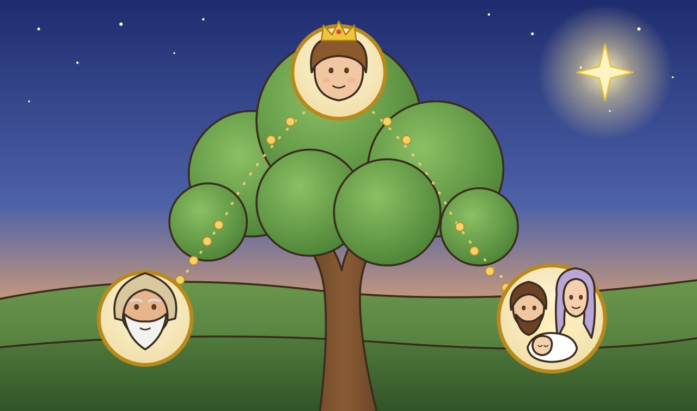

Сцена 1 · Матфей 1:1–17
Родословие Иисуса
Евангелие от Матфея начинается с Иисуса. Это список имён дедушек и прадедушек.
В самом начале — , в середине — царь , а в самом конце — Иисус. Бог обещал Аврааму и Давиду: «От вашего потомка придёт благословение».
Это обещание исполнилось в Иисусе.